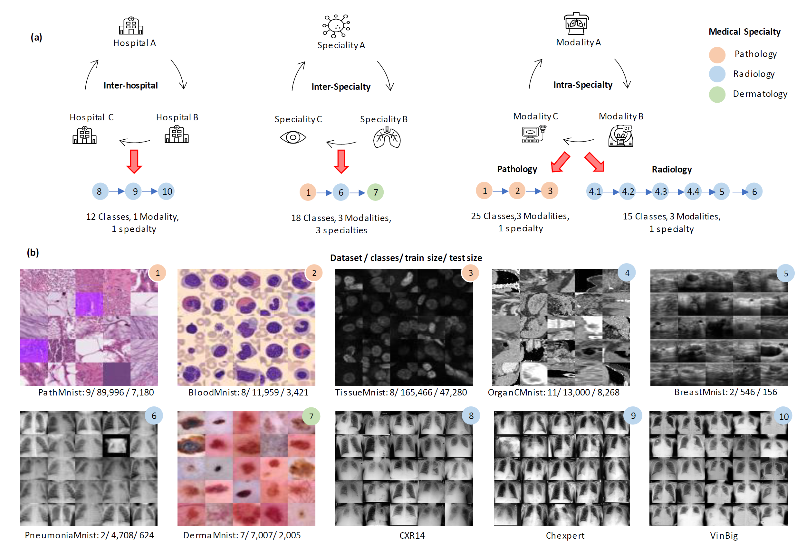
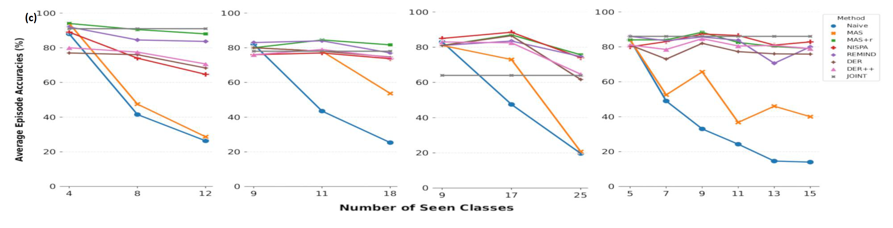

Healthcare clinics regularly encounter dynamic data that changes due to variations in patient populations, treatment policies, medical devices, and emerging disease patterns. Deep learning models can suffer from catastrophic forgetting when fine-tuned in such scenarios, causing poor performance on previously learned tasks. Continual learning allows learning on new tasks without performance drop on previous tasks. In this work, we investigate the performance of continual learning models on four different medical imaging scenarios involving ten classification datasets from diverse modalities, clinical specialties, and hospitals. We implement various continual learning approaches and evaluate their performance in these scenarios. Our results demonstrate that a single model can sequentially learn new tasks from different specialties and achieve comparable performance to naive methods. These findings indicate the feasibility of recycling or sharing models across the same or different medical specialties, offering another step towards the development of general-purpose medical imaging AI that can be shared across institutions.

Fig. 1 — The four continual learning scenarios (inter-hospital, inter-specialty, intra-specialty pathology/radiology) and sample images from the ten constituent datasets.
Medical imaging AI models are usually trained once on a fixed dataset from a single hospital, modality, and disease population, then deployed. But hospitals are not static: patient demographics shift, new imaging hardware is installed, treatment protocols change, and new disease patterns emerge. Simply fine-tuning a deployed model on new data causes catastrophic forgetting — the model rapidly loses its earlier competence. The alternative approaches used in practice are also unattractive: joint training on old and new data is often blocked by patient privacy regulations and cross-institution data-sharing restrictions, while training a brand-new independent model per task (the naive approach) multiplies computational and deployment costs and throws away any shared representation across related tasks.
Continual learning offers a middle path: a single model that learns new tasks sequentially while retaining performance on tasks it learned earlier — without needing to revisit all the old data. This paper asks how well continual learning actually works for the specific dynamics healthcare institutions face: sharing models between hospitals in different countries, sharing models between medical specialties within the same hospital, and recycling a model within a specialty as new disease-finding tasks appear over time.
Ten classification datasets (largely drawn from MedMNIST, plus CheXpert, CXR-14, and VinBig) are organized into four continual learning scenarios across three categories:
No task labels are given at test time — the model must infer both which task an image belongs to and the correct class within that task, making this a genuinely class-incremental (not task-incremental) benchmark.
Six continual learning variants are implemented and benchmarked against a naive learner (independent model per task) and a joint learner (trained on all data at once) baseline, using a 5-layer CNN backbone:
No replay buffer needed
Require a data buffer
As expected, the naive learner's accuracy on earlier tasks drops sharply as new tasks are added. Continual learning methods, by contrast, perform on par with or better than naive learning on the current task, with little to no drop on previous tasks. Replay-based methods consistently outperform pure regularization methods across all four scenarios, with MAS+r the strongest performer overall.
Inter-hospital
88%
MAS+r final accuracy
Inter-specialty
82%
MAS+r final accuracy
Pathology
75%
MAS+r final accuracy
Radiology
79%
MAS+r final accuracy
MAS+r also achieves the best (least negative, and in one case positive) backward transfer of −2, −5, +3, and −5 across the four scenarios respectively — meaning it barely loses, and sometimes even improves, performance on earlier tasks as it learns new ones. Among methods that don't need a replay buffer, REMIND performs surprisingly well (83%, 77%, 75%, 80% across the four scenarios) by storing only compressed feature representations rather than raw patient images, which helps both memory footprint and data privacy — though its frozen initial feature extractor limits flexibility on tasks unrelated to its initial training distribution. Plain MAS, without replay, shows a much larger accuracy drop.

Average episode accuracy vs. number of seen classes, for all methods across the four scenarios (left to right: inter-hospital, inter-specialty, pathology, radiology).
This study does not explore how the order of tasks affects the quality of learned features, and uses relatively small 32×32×3 images with a small CNN backbone — higher-resolution imaging and larger pretrained backbones are a natural next step. The paper's societal impact statement also flags real risks: continual learning models can inherit and, if deployed with automatic unsupervised updates, silently exacerbate biases in the underlying data; quality-control gaps across deployment regions could lead to misleading interpretations; and any medical AI system carries privacy and security exposure if compromised. These are important considerations for any real-world deployment of shared, continually-updated healthcare models.
@misc{singh2023classincremental,
title = {{Class-Incremental Continual Learning for General Purpose
Healthcare Models}},
author = {Singh, Amritpal and Gurbuz, Mustafa Burak and Gantha, Shiva Souhith
and Jasti, Prahlad},
year = {2023},
eprint = {2311.04301},
archivePrefix = {arXiv},
primaryClass = {cs.LG},
note = {Medical Imaging meets NeurIPS Workshop, NeurIPS 2023}
}